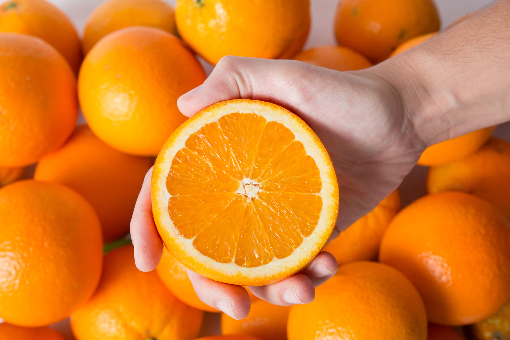

البرتقال هو نوع من الفاكهة واحدة من أكثر الفواكه شهرةً وانتشارًا في العالم. يُعرف البرتقال بالاسم العلمي Citrus × sinensis وهو جزء من عائلة الحمضيات (Rutaceae). يمتاز البرتقال بلونه البرتقالي الساطع ونكهته اللذيذة والمنعشة.
البرتقال هو واحدة من أشهر الفواكه في العالم، ويُعتبر رمزًا للصحة والانتعاش بفضل نكهته اللذيذة وفوائده الغذائية. إنه يحتوي على مجموعة من الفيتامينات والعناصر الغذائية التي تجعله خيارًا صحيًا ولذيذًا للأكل. دعونا نستكشف الفيتامينات الرئيسية التي توجد في البرتقال والفوائد التي يمكن أن تقدمها لصحتك:
البرتقال يعتبر مصدرًا غنيًا بفيتامين C، والذي يعد أحد الفيتامينات الأساسية لصحة الجسم. يساهم فيتامين C في دعم الجهاز المناعي ويساعد الجسم على مكافحة الالتهابات والأمراض. يعزز تناول البرتقال وفيتامين C أيضًا صحة الجلد ويساعد في تكوين الكولاجين الذي يحافظ على مرونة البشرة.
البرتقال يحتوي على كميات قليلة من فيتامين A. فيتامين A مهم للرؤية الصحية ويساعد في الحفاظ على البصر الليلي الجيد. إنه أيضًا مفيد لصحة الجلد والأغشية المخاطية ويشجع على نمو الأنسجة السليم.
البرتقال يحتوي على فيتامينات ب المجموعة بما في ذلك فيتامين B1 (ثيامين) وفيتامين B6 (بيريدوكسين). هذه الفيتامينات تلعب دورًا هامًا في دعم عملية التمثيل الغذائي وإنتاج الطاقة. يمكن أن تساهم فيتامينات B في تقوية الجهاز العصبي والحفاظ على صحة الجلد والشعر.
البرتقال غني بالألياف الغذائية التي تساعد في تحسين عملية الهضم والمساهمة في الشعور بالامتلاء. تلعب الألياف دورًا في تنظيم مستويات السكر في الدم والحفاظ على صحة القلب.
تعزيز الجهاز المناعي: يحتوي البرتقال على كميات كبيرة من فيتامين C، الذي يساهم في تعزيز الجهاز المناعي وزيادة مقاومة الجسم للالتهابات والأمراض. هذا يمكن أن يساعد الرجال في الحفاظ على صحتهم العامة والوقاية من الأمراض. صحة القلب: تحتوي البرتقالات على الألياف الغذائية والمركبات الطبيعية مثل الفلافونويد، وهي عناصر تعمل على تحسين صحة القلب وتقليل مخاطر أمراض القلب. تساعد الألياف في تنظيم مستويات الكولسترول في الدم. التخفيف من التهاب المفاصل: فيتامين C الذي يوجد في البرتقال يمكن أن يلعب دورًا في تقليل التهابات المفاصل وتخفيف آلام المفاصل، مما يجعله مفيدًا للرجال الذين يعانون من مشاكل في المفاصل. صحة الجلد: فيتامين C يلعب أيضًا دورًا في الحفاظ على صحة الجلد، وهذا مهم بالنسبة للرجال الذين يهتمون بمظهرهم الشخصي وصحة بشرتهم. دعم الهضم: الألياف الغذائية في البرتقال تساعد في تعزيز عملية الهضم ومنع مشاكل الجهاز الهضمي مثل الإمساك. مصدر جيد للطاقة: البرتقالات تحتوي على الكربوهيدرات والسكريات الطبيعية، مما يجعلها وجبة خفيفة مثالية لزيادة الطاقة في منتصف اليوم. مضادات الأكسدة: تحتوي البرتقالات على مضادات الأكسدة التي تساعد في مكافحة الجذور الحرة وتقليل التأثيرات الضارة للتأكسد. يمكن تناول البرتقالات بصور مختلفة، سواء كفاكهة طازجة أو عصير برتقال طبيعي، وهذا يجعلها سهلة الاستهلاك كجزء من نظام غذائي صحي للرجال. ومع ذلك، يجب دمجها في طعام يحتوي على تنوع وتوازن لضمان الاستفادة القصوى من فوائدها.
تعزيز الجمال وصحة الجلد: البرتقال غني بفيتامين C، وهو مضاد للأكسدة يلعب دورًا هامًا في تحفيز إنتاج الكولاجين، مما يعزز مرونة البشرة ويقلل من ظهور التجاعيد والخطوط الدقيقة. كما يساعد في تفتيح البشرة وتقليل مشاكل البشرة مثل حب الشباب. دعم صحة القلب: الألياف الغذائية والمركبات الطبيعية الموجودة في البرتقال تساعد في تنظيم مستويات الكولسترول في الدم، مما يقلل من مخاطر أمراض القلب والأوعية الدموية. التخفيف من آلام الحيض: فيتامين C يمكن أن يقلل من الألم والتقلصات التي يمكن أن تصاحب فترة الحيض. دعم الجهاز المناعي: فيتامين C في البرتقال يعزز الجهاز المناعي ويساعد في مكافحة الالتهابات والأمراض. صحة الأمعاء والهضم: الألياف الغذائية في البرتقال تساعد في تعزيز الهضم ومنع مشاكل الجهاز الهضمي مثل الإمساك. صحة العيون: فيتامين A الموجود في البرتقال مفيد لصحة العيون ويمكن أن يقلل من مخاطر بعض الأمراض العينية. تقليل مخاطر السرطان: البرتقال يحتوي على مضادات الأكسدة التي يمكن أن تقلل من مخاطر بعض أنواع السرطان، مثل سرطان الثدي. المساهمة في إنقاص الوزن: بفضل قلة السعرات الحرارية والألياف، يمكن أن تكون البرتقالات جزءًا مفيدًا من نظام النساء الراغبات في فقدان الوزن.
عصير البرتقال له العديد من الفوائد الصحية الهامة نظرًا لمحتواه الغني بالمواد الغذائية والعناصر الغذائية المفيدة. إليك بعض الفوائد الرئيسية لعصير البرتقال: 1. **غني بفيتامين C:** عصير البرتقال هو مصدر ممتاز لفيتامين C، وهو مضاد للأكسدة يساهم في تعزيز الجهاز المناعي وحماية الجسم من الأمراض والعدوى. 2. **تحسين صحة الجلد:** فيتامين C يلعب دورًا هامًا في تحفيز إنتاج الكولاجين، مما يساهم في صحة الجلد ويمكن أن يقلل من ظهور التجاعيد والبقع الداكنة. 3. **صحة القلب:** الألياف والبوتاسيوم الموجودة في عصير البرتقال تساعد في تنظيم ضغط الدم وتحسين صحة القلب والأوعية الدموية. 4. **مكمل لفقدان الوزن:** عصير البرتقال قليل السعرات الحرارية ويمكن أن يساهم في إدارة الوزن وتحقيق الشعور بالامتلاء. 5. **تعزيز الهضم:** الألياف في البرتقال تساعد في تحسين عملية الهضم ومكافحة مشاكل الجهاز الهضمي مثل الإمساك. 6. **مضاد للالتهابات:** عصير البرتقال يحتوي على مواد تساهم في تقليل الالتهابات في الجسم. 7. **دعم الجهاز المناعي:** فيتامين C يعزز الجهاز المناعي ويساهم في مكافحة العدوى والأمراض. 8. **تقليل مخاطر الأمراض المزمنة:** استهلاك عصير البرتقال قد يرتبط بتقليل مخاطر الإصابة بالعديد من الأمراض المزمنة مثل أمراض القلب والسكري من النوع 2. 9. **تحسين الهضم والجهاز الهضمي:** الألياف في البرتقال تسهم في تعزيز الهضم والتمثيل الغذائي الصحي. 10. **مصدر للطاقة:** عصير البرتقال يحتوي على السكريات الطبيعية التي توفر طاقة سريعة للجسم. يمكنك الاستمتاع بفوائد عصير البرتقال من خلال تناوله بانتظام كجزء من نظامك الغذائي اليومي، سواء كان طازجًا أو عبوة معبأة تجاريًا. إذا كنت تعاني من مشاكل صحية محددة أو تتناول أدوية معينة، يفضل استشارة طبيبك قبل تغيير نمط الغذاء الخاص بك.
الفراولة تحتوي على فيتامين C ومضادات أكسدة، تعزز صحة البشرة، تقوي المناعة،
الرمان غني بمضادات الأكسدة التي تقوي الجهاز المناعي وتحمي الخلايا من التلف.
يعزز صحة القلب. يقوي الجهاز المناعي. يساعد في السيطرة على الوزن.
تعزز الجهاز المناعي. تحتوي على مضادات الأكسدة. تعزز صحة العينين.
يمكن أن يساعد في تقليل ضغط الدم. يحتوي على مضادات الأكسدة للحفاظ على صحة الجسم.
يمكن أن يساعد في تقليل التورم والالتهابات بفضل الإنزيمات الطبيعية. يحتوي على معادن مثل المغنيسيوم والبوتاسيوم لصحة القلب والأوعية الدموية.